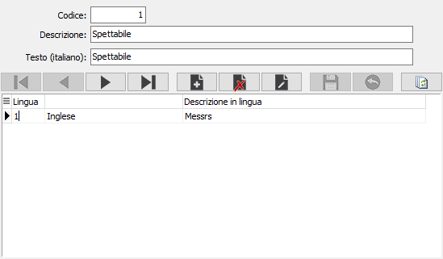

Voci fisse
La tabella di configurazione voci fisse consente di inserire o modificare le “voci fisse” in lingua estera utilizzate dai programmi di stampa per l’intestazione dei vari documenti.
La compilazione di questa tabella è quindi riservata agli utenti che hanno necessità di intestare alcuni documenti con diciture il lingua estera.

CODICE: codice numerico presente nella tabella Voci fisse in lingua per scegliere la voce fissa da trattare. L’inserimento di eventuali nuove voci fisse è riservato al servizio di Assistenza software. Sul campo sono attive le funzioni di ricerca sulla tabella stessa.
DESCRIZIONE: campo alfanumerico per contenere la descrizione della voce fissa in esame.
TESTO (ITALIANO): campo alfanumerico per contenere il testo in italiano della voce fissa in esame.
LINGUA: codice numerico, presente nella tabella lingue, per individuare la lingua in cui deve essere trattata la descrizione della voce fissa in esame. A conferma, viene visualizzata la descrizione della lingua stessa. Posizionando il puntatore del mouse sul campo descrizione lingua, è possibile scegliere la lingua tramite un combo box.
DESCRIZIONE IN LINGUA: campo alfanumerico per inserire o modificare la descrizione della voce fissa in esame nella lingua attiva.